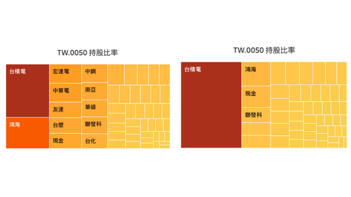

從0050看台灣產業分佈

只要你是台股的投資者，相信你一定對元大0050並不陌生。元大0050是台灣最大的指數型基金(ETF)之一，而他所追蹤的指數就是台灣50指數，我們可以簡略的把這檔ETF看作定期追蹤台灣市值前50大的公司，並按照這50大公司的市值去分配投資組合的比例，且會根據這些公司市值的變化滾動式修正投資組合的名單或佔比。因此，從0050的投資組合佔比我們便可掌握台灣大致的產業分佈和台灣的主流企業。
在這個project中，我先利用python從公開資訊觀測站(https://mops.twse.com.tw/mops/web/t78sb04_q2) 抓取元大0050歷年來的投資組合比例，然後用Tableau視覺化分析台灣產業分佈和主流企業的變化。
關於爬取資料的部分，我將程式碼放在我的Github： https://github.com/usausagichan/data-mining-for-0050.Tw- ，有興趣的朋友可以參考一下。
而以下文章我就直接呈現將這些資料視覺化的結果（https://public.tableau.com/app/profile/ctchen/viz/IndustryAnalysis_16698030444010/Dashboard1可見完整dashboard），並為此做一些分析。

公開資訊觀測站的資料
抓下來的資料如下圖，可以看到表中包含了股票名稱、產業類別和持股比率，欄目持股比率為單一公司股票佔比，持股比率.1為產業類別的佔比

以下是我將今年Q3各產業和公司佔元大0050持股比率視覺化的結果：
從文字雲和Tree map看台企主流企業與公司的板塊 :
圖一

其中Treemap和文字雲的大小和顏色深淺代表產業及公司在元大0050中投資組合的佔比，也大致反映了台股中各大公司和產業的市值。由圖一中可以看到在今年(2022)年，台灣產業以半導體業為大宗，第二名是金融保險業，約分別佔元大0050持股約53.79%和15.86%，差距約3.39倍之多，再來就是其他電子業、通信網路業、電子零組件、電腦及週邊設備業、光電業等等的其他科技業和塑膠工業，還有像鋼鐵工業、食品工業、水泥工業等零星的傳統產業。而市值最大的公司為台積電，連第二名的鴻海也難以望其項背。
圖二
若我們將眼光聚焦於半導體產業（圖二左）也不難看到台積電壓倒性的佔最大宗，甚至是次之的聯發科將近12.37倍之多。反觀第二名的金融保險產業則分布較為平均（圖二右），前五大公司都約佔比1.64%到1.47%。事實上這幾間公司的在元大0050佔比排名每季可能都會有所不同，佔比的高低也不完全反映市值。這是因為台指0050的計算還需要考慮到個股的公眾流通性，而在這幾家公司市值差距並沒有那麼懸殊的情況下，公眾流通性這個因素可能就會影響他們在元大0050持份的排名。
總結來說，台灣的產業尤其偏重半導體業和電子相關科技業及金融保險業。然而這些產業的就業門檻比起其他產業來得高，特別是半導體業幾乎由台積電一家公司所主導，使得分得到這些大公司資源的就業人口非常有限。根據工商日報2021年的報導1，台灣IC半導體相關的就業人口也不過約７％，其中台積電員工至去年也不過6萬多人2 ，而有七至八成的人在傳統產業工作。也就是說，在這些我們看到的大公司中工作的人口佔台灣的少數，受惠於這些市值大的公司給的高薪也是少數。這很可能造成貧富差距，多數人的處境和收到的薪水可能和台灣經濟的數值象徵-台指0050中是脫鉤的。另外在台灣經濟高度仰賴台積電、電子業等對電需求高的產業下，如果未來缺電可能會造成嚴重的經濟問題。
台積電股價與元大0050的關係
圖三
投資組合存在的本質是為了避險，這點指數型基金也不例外。但在台灣台積電一支獨秀的情況下，元大0050有將近一半的資金投在台積電真的沒問題嗎？我們可以從今年元大0050(0050.TW)和台積電(2330.TW)的收盤價歷史資料（圖三）看到，兩者走勢幾乎相同，看起來台積電的漲跌決定了元大0050的漲跌。從投資組合比例的數字大小來看，市值第二大的鴻海（持股佔比5.42%）就算上漲8.33%，對元大0050的報酬率影響也不過等於台積電上漲1%的影響，遑論其他支佔比更小的個股。
圖四
實際上，在所有五十支個股中，持股佔比2%以上的股票只有四支-台積電、鴻海、聯發科、台達電 （圖四左） ; 1%以上的個股也只有22支（圖四右）。也就是說，有大概一半的個股佔元大0050投資組合比例低於1%，他們的影響力相較台積電可以說是蚍蜉撼樹。
圖五 元大0050在（左）2008年和（右）2019年的板塊分佈

因此，站在分散投資的角度想，購入元大0050ETF不見得是好的選擇。自元大0050在2003年上市以來，台積電幾乎都佔投資組合的最大宗，且穩定維持佔比10-20%的區間，直到2012第四季台積電佔比開始超過20%，往後幾年台積電的佔比更是逐年增加，在2019年台積電的股價創下往年新高，在短短一年內從年初的219.5元漲到331元，在Q4年末持股佔比達到約40%。若我們觀察2008年（圖五左）和2019年（圖五右）的板塊分佈可以看到在這十年間台積電在台灣指數的佔比大幅增加，也讓台灣的產業更集中於半導體業。
到了2020年第二季台積電宣布五奈米製程量產，此後有更大量資金湧入，該年第三季持股也到達了48%，相較前一季持股整整增加了約8％，反映出短時間內市值大幅的增加。單看股價而言，自2020年3月疫情恐慌股市崩盤至隔年1月，台積電從248元上漲到673元，整整翻了2.71倍。自今年(2022)年初隨著美國一路的升息，台積電股價一路呈下跌趨勢;雪上加霜的是在今年8月時裴洛西訪台後，地緣政治風險隨之升高，在外資急於撤離的情況下一路下跌，直到最近才有止跌回升的現象。
圖六 元大0050和台積電在（左）2019-2022年和（右）2008-2019股價

我們可以比較2008年初到2018年末（圖六左）和2019年初到2020年末（圖六右）台積電和元大0050收盤價的歷史，可以很明顯地看到2019-2022這三年台積電和元大0050股價的走勢比2018年以前的十年來的更接近。這一方面是因為台積電的市值在2019年開始就大幅上升，因此增加了持股比例，讓台積電對元大0050影響力更強; 另一方面因為台積電作為台灣第一大股，且近三年幾乎已成為業界龍頭，必更受世界各地的投資者矚目，大量資金進出這支股票的情況下波動更大是一定的，也連帶影響到元大0050。在這兩種因素加成的情況下元大0050的走勢很大部分被台積電所決定，也因此才有人戲稱買元大0050其實就等於買台積電一說。
總結
視覺化元大0050持股比例後，我們首先能看到台灣產業資金大量集中在半導體、金融業、電子業，其中半導體產業中台積電獨佔鰲頭。從這些結論我們可以觀察到台灣就業市場潛在的貧富差距和台灣經濟命脈高度仰賴用電的問題。而從元大0050的投資組合的持股近乎一半集中在台積電，這不但反應出台灣經濟高度仰賴台積電，也讓元大0050的避險能力受到限制。萬一台積電在短時間內大量崩跌，快到元大0050來不及修正他的投資組合，減少損失，對持有這個基金的人而言必定會是場災難。因此持有這檔股票的人應該需要非常注意台積電的獲利能力和公司狀況才能真正的避開風險，可能不符合許多人對於ETF能實現「無腦投資」的期待。
參考資料